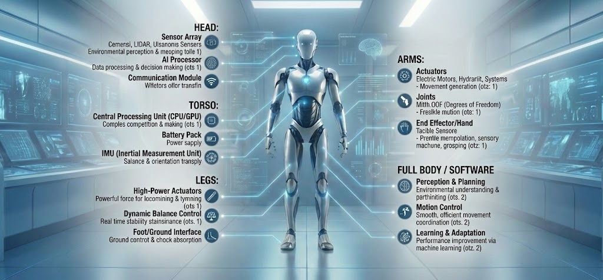

What makes a Robot
Fundamental guides and technical documentation for robot builders.

Essential Components of Robotic Mechanisms
 LEARNROBOT
LEARNROBOT
Fundamental guides and technical documentation for robot builders.